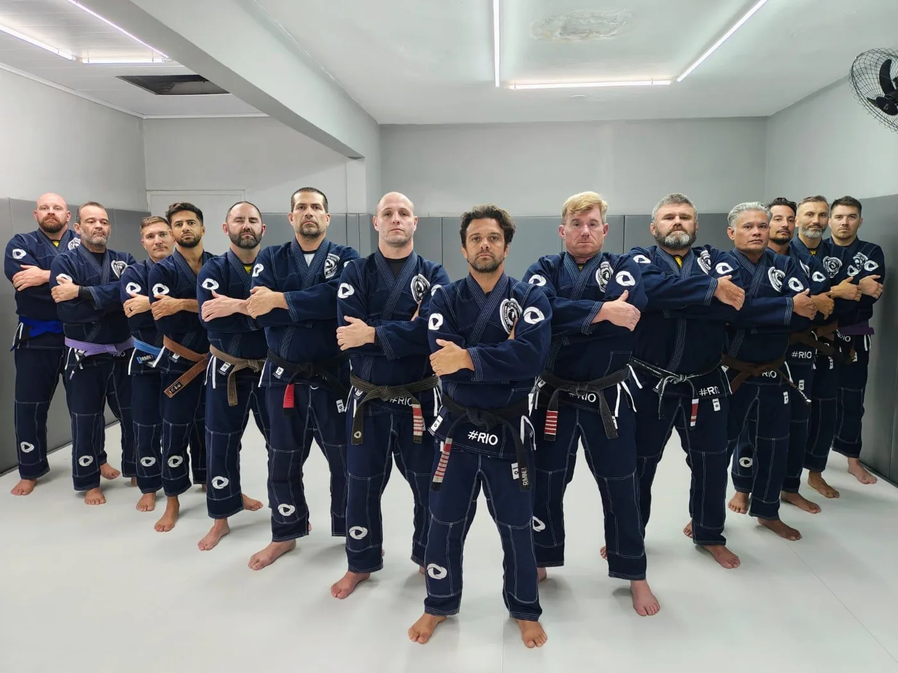
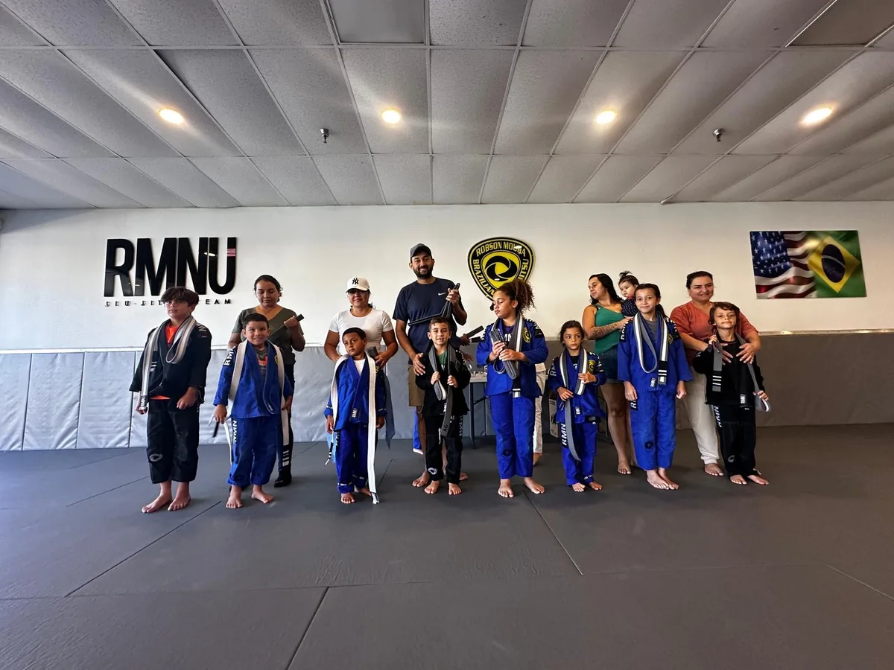

A room on The Way’s field list because extraordinary skill matters most when it remains attentive, welcoming, and human.
Personal recommendationPublic facts verifiedVisit pending
Field list · 01Tampa11220 W. Hillsborough Ave · Florida
RelationshipCj personal recommendation
VerificationOfficial public sources
ReportingInterview + return visit pending
PhotographyOfficial academy website

Adult team · Tampa headquarters

Youth program · The next generation
Mastery that keeps the student in view.
Robson Moura’s competitive legacy is globally recognized, but that alone is not why this academy belongs here. The editorial question is more intimate: how does a world-class practitioner translate mastery into a room where a beginner can still feel seen?
The academy’s own materials describe a student-focused, family-oriented environment serving first-time students through advanced practitioners. Cj’s personal experience is the reason for the recommendation; observation and interviews will determine the finished story.
What we can responsibly say now
Public facts—not a finished review.
Leadership
Robson Moura
The academy identifies Robson as its head coach and an eight-time World Champion.
Learning environment
Student-centered
Official materials emphasize personal development, a family atmosphere, and support for complete beginners.
Programs
Multiple paths in
The published program mix includes adult Jiu-Jitsu, kids Jiu-Jitsu, Gi, No-Gi, and advanced development.